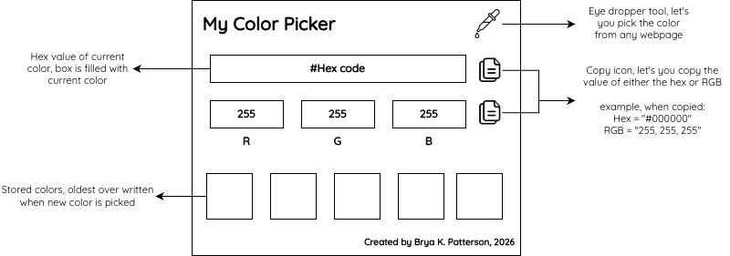

Executive Summary
The Mission: I built this because I was frustrated with the color picker extensions in the Chrome Web Store. Many popular options are frequently disabled for containing malware or tracking scripts. This extension is my answer: a simple color picker that does exactly what you expect.
- Core Capabilities:
- API: Uses the native browser EyeDropper for high performance and security.
- Instant Values: Get Hex and RGB values immediately.
- Copy-to-Clipboard: One-click copying for both Hex and RGB formats.
- History: Saves your last 5 selected colors locally.
- Modern UI: Clean interface using the Quicksand Google Font and Font Awesome icons.
Code and Files
Access the code and files in my Githu Repo
Installation (Load Unpacked)
Since this is a personal tool, you can load it directly into Chrome:
- Download or clone this repository.
- Open Chrome and navigate to chrome://extensions/.
- Enable "Developer mode" in the top right corner.
- Click "Load unpacked" and select the folder containing these files.
Developer mode must be enabled for this extension to be used.